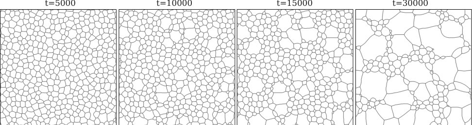

Why some grains grow abnormally
Abnormal grain growth undermines the microstructure control that heat treatment is meant to give. We computed segregation energies of nine solutes at three types of ⟨110⟩ tilt boundaries in α-Fe with DFT and fed them into phase-field simulations. Abnormal growth comes from grain-boundary anisotropy, and how strong it is depends on the solute. When roughly 10–30% of boundaries are highly mobile, grains develop crown-like shapes and grow abnormally.
Acta Materialia (2025) · paper · arXiv